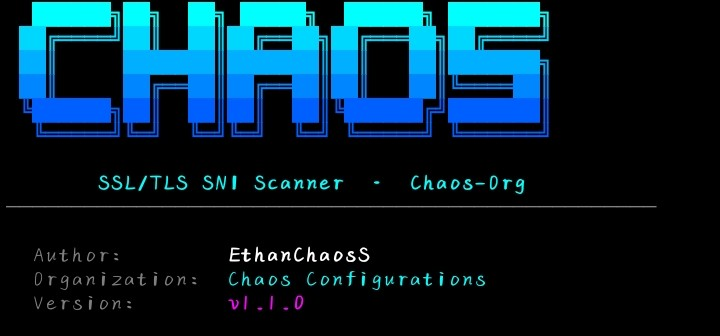

What is Chaos-Org Scanner?

Chaos-Org Scanner is a powerful Python-based network scanning tool designed for cybersecurity enthusiasts, students, and IT professionals. It provides a clean command-line interface for gathering network information and performing security assessments in authorized environments.
Built with ease of use in mind, the scanner helps users quickly get up and running with minimal setup — install the dependencies, run the installer, and you're scanning. No complex configuration required.
Getting Termux
Chaos-Org Scanner runs inside Termux on Android. You need to install Termux first before proceeding. The official builds from GitHub or F-Droid are the only recommended sources — they are fully featured and actively maintained. The Play Store version is outdated and restricted.
INSTALL_FAILED_UPDATE_INCOMPATIBLE. Pick one source and always update from the same place.
Update Termux
Open Termux after installing it. Before doing anything else, update the package manager and upgrade all base packages. This ensures the installer has access to the latest Python runtime and dependencies.
$ pkg update && pkg upgrade -yIf prompted to replace any config files, press N to keep the existing version. The upgrade may take a few minutes depending on your connection speed.
Install Required Packages
Chaos-Org Scanner is delivered as a zip archive. You need wget to download it and unzip to extract it. Install both now.
Step 1 — Install wget:
$ pkg install wgetStep 2 — Install unzip:
$ pkg install unzip -y| Package | Purpose |
|---|---|
wget | Downloads the scanner zip archive from the Chaos Configurations server |
unzip | Extracts the downloaded zip archive into the working directory |
Download the Scanner
With wget installed, download the Chaos-Org Scanner zip archive directly from the Chaos Configurations server.
$ wget "https://chaosconfigurations.co.za/chaos%20org.zip"The file will be saved as chaos org.zip in your current Termux working directory. The %20 in the URL is the URL-encoded space character — wget will handle this automatically.
termux-wake-lock first as an alternative.Extract & Set Up
Create a dedicated folder for the scanner, extract the archive into it, then navigate into the directory.
Step 1 — Create the directory:
$ mkdir -p chaos-orgStep 2 — Extract the archive into it:
$ unzip "chaos org.zip" -d chaos-orgStep 3 — Navigate into the scanner directory:
$ cd chaos-org| Flag / Arg | Purpose |
|---|---|
mkdir -p | Creates the directory and any missing parent directories without errors if it already exists |
unzip -d | Extracts the archive contents into the specified destination directory |
Install Python & Dependencies
Chaos-Org Scanner is a Python application. Install Python via pkg, then install all required Python libraries from the included requirements.txt file.
Step 1 — Install Python:
$ pkg install python -yStep 2 — Install Python package dependencies:
$ pip install -r requirements.txtchaos-org directory where requirements.txt lives. If you see No such file or directory, run cd chaos-org first.Run the Installer & Launch
With Python and all dependencies installed, run the setup script to finalize the installation, then launch the scanner.
Step 1 — Run the installer script:
$ bash install.shStep 2 — Launch the scanner:
$ python main.pyscanner| Command | Purpose |
|---|---|
pkg install wget | Install the download tool |
wget "chaos org.zip" | Download the scanner archive |
pkg install unzip -y | Install the extraction tool |
mkdir -p chaos-org | Create the scanner directory |
unzip "chaos org.zip" -d chaos-org | Extract the archive |
cd chaos-org | Enter the scanner directory |
pkg install python -y | Install Python runtime |
pip install -r requirements.txt | Install Python dependencies |
bash install.sh | Run the setup script |
python main.py | Launch the scanner |
Developer
Chaos-Org Scanner was built and is maintained by the team behind Chaos Configurations.
The project is focused on creating practical, user-friendly cybersecurity tools for learning, research, and authorized security testing. Chaos-Org Scanner is designed to lower the barrier to entry for network security assessment — giving beginners a clean, functional tool they can understand and use from day one.
Troubleshooting
Common issues and how to fix them.
wget: command not found
pkg install wget first, then retry the download command.unzip: command not found
pkg install unzip -y, then retry the extraction command.No such file or directory: requirements.txt
cd chaos-org to enter the scanner folder first, then re-run pip install -r requirements.txt.pkg install python -y again to ensure Termux's Python is installed, then retry.scanner: command not found
python main.py from inside the chaos-org directory to launch the scanner directly.termux-wake-lock before retrying.